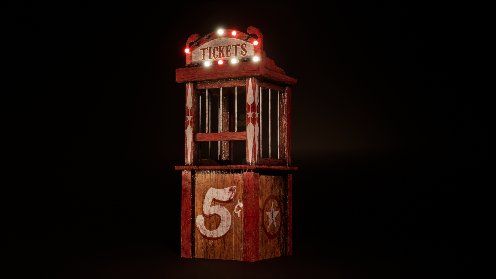
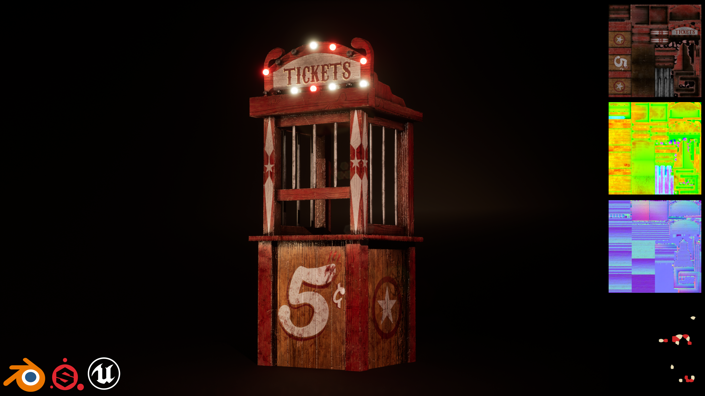

Props — Breakdown
A game-ready 3D prop designed to capture the darker side of carnival nostalgia.
This model was created in Blender, textured in Substance Painter, and rendered in Unreal Engine 5. Optimized for real-time use, with a focus on strong silhouette and readable details for horror-themed environments. The peeling paint, chipped wood, and rusted metal details evoke the feeling of an abandoned fairground, while the blood stains and pentagram suggest a more sinister presence.
"Created as a personal project piece in a single session."
A strong emphasis was placed on environmental storytelling. Props such as paperwork, photographs, weapons, and office clutter were deliberately placed to imply an active murder investigation and suggest character behaviour without explicit narrative prompts. A central hero object was designed to act as a focal point for both composition and story, reinforcing the psychological tone of the space.
Hero render, supporting renders, texture screenshots and an in-engine turntable.

Shader experiments, lighting breakdowns and material notes.

Used packed textures and custom material instances to reduce draw calls. Detail on UV packing and mask usage can be added here.